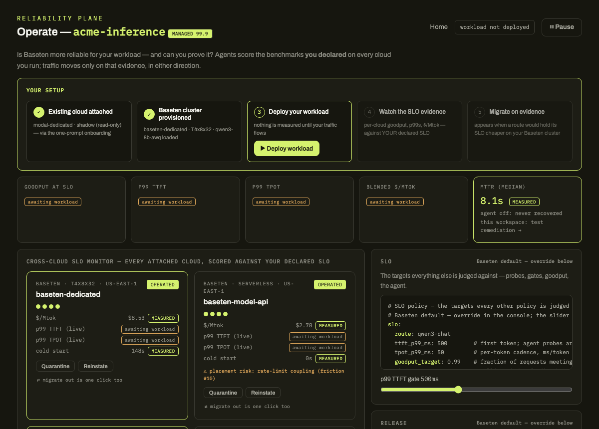

One product surface end to end — feature strategy → PRD → live MVP — for Baseten's inference platform: four declared policy objects (Placement, Failover, Release, SLO), one glanceable operate screen, an SLO-driven incident agent, and certified cross-provider migration.
16 Baseten entries, each with committed evidence: a deploy that sat 30 minutes in DEPLOYING then died silently, un-triageable BUILD_FAILEDs, a production pointer left on a dead deploy, 429s with no Retry-After, metrics that arrive as silent nulls.
The same workspace that fought us manually attached, baselined, and deployed through Baseten's MCP server and agent skills. Evidence: evals/mcp-deploy, MCP-read metrics CSVs committed in data/recorded/.
One prompt onboards you into a console that measures the SLOs you care about — p99 TTFT/TPOT, goodput, measured $/Mtok — across every cloud you run on, and migrates traffic to Baseten reliably (shadow → certify → promote, rollback held) when the evidence says so.
Built for teams evaluating Baseten dedicated inference, and existing Baseten customers running multicloud portfolios. Same console, same trust ladder: observe → migrate → declare → operate. Monitoring is read-only on external clouds; control features apply only to Baseten-side pools — this is a migration play, not a platform ask.

evidence: every number on this site is measured or labeled simulated; the MTTR 8.8–9.2s is real — recorded live-incident runs in baseten-mvp, copied verbatim with provenance.